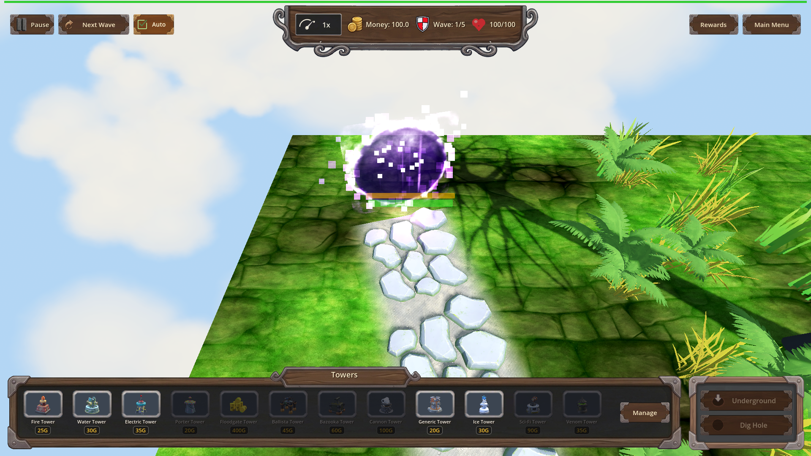
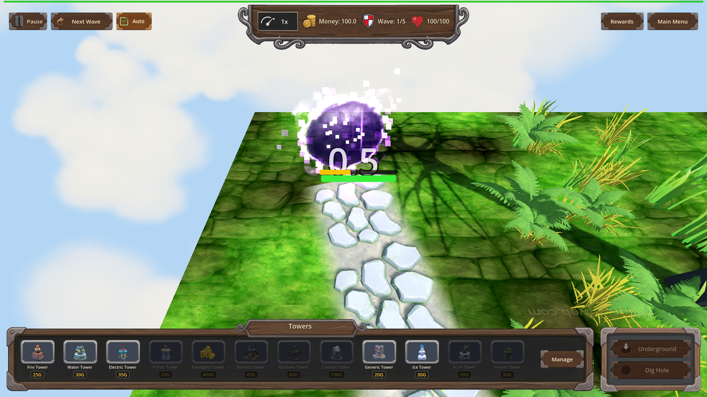
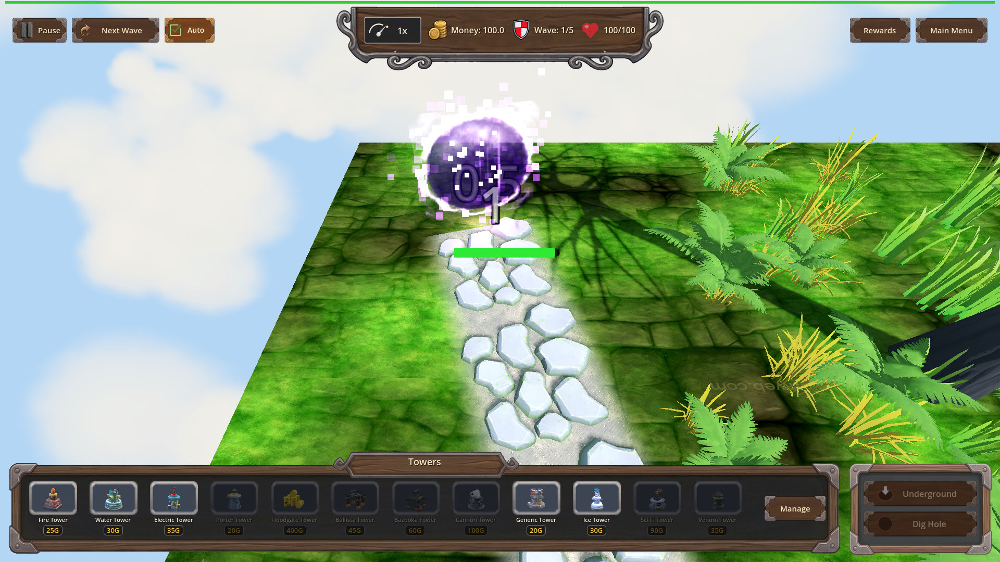

Manual Test Report – Warlord's Doctrine granted-armor bar readability (r2)
Summary
- Result: PASSED
- Tested on: 2026-08-24, windowed Godot 4.4.1 (gl_compatibility / llvmpipe), 1920x1080
- Scenario: .gen/ui_scenario.md via tests/scenarios/enemy_armor_bar_visual.json
- Tester: Manual-tester profile (independent windowed run through run_project_cmd)
I re-ran the evidence scenario in a real window (never headless) with the Warlord's
Doctrine perk at L1 on map_3 wave 1. The Mushnub spawns with granted armor 1.76
(log line `[WARLORDS-DOCTRINE] spawn_bonus level=1 granted_armor=1.76 on Mushnub`),
and the harness captures three close-up beats: full armor, partial armor after one
scripted hit, and depleted. I inspected all six fresh PNGs visually. The bars are
readable at this zoom, the armor fill visibly shrinks after the hit, and the row is
hidden at 0. No Debug Panel appears in any shot. Note: Mushnub's GLB model fails to
load in this worktree so the enemy renders as a placeholder purple sphere — this is
expected and explicitly allowed by the plan; no armor was faked on a naturally
armored enemy.
Scenario Walkthrough
### Beat 1 – Spawn full (doctrine-armored Mushnub)
- Action: Windowed run of enemy_armor_bar_visual.json; first screenshot after
hide_debug_panel + doctrine L1 apply + map_3 wave 1 spawn.
- Expected: Mushnub close-up with HP row plus granted armor row, both filled;
no gray Debug Panel.
- Observed: Both rows present and fully filled — orange/yellow armor bar over green
HP bar, each ~6–8 px of colored fill at the scenario zoom, clearly distinct.
No debug overlay anywhere in frame. Harness log confirms granted_armor=1.76 at spawn.
- Status: PASS
-

### Beat 2 – Partial strip after one scripted hit
- Expected: Same framing; armor fill visibly smaller than beat 1 while HP stays
essentially unchanged.
- Observed: Armor bar shows a partial (roughly 40%) fill vs full in beat 1; HP bar
still essentially completely full. Both bars readable, unobstructed. Log:
`0.76 armor removed by 1.0 armor damage`.
- Status: PASS
-

### Beat 3 – Depleted
- Expected: Armor to 0 → only the HP row remains visible.
- Observed: Only the single green HP bar visible near the enemy; the armor row is
hidden. No debug panel, nothing covering the bar.
- Status: PASS
-

Criteria
- No final evidence PNG shows the gray Debug Panel
-
-
-
- All six shots inspected: no gray left-third overlay in any of them.
- Doctrine-leg screenshots frame the live Mushnub from map_3 wave 1 at its actual
spawn position
-
- Camera framing produced by the harness frame_enemy action against the spawned
enemy node (log confirms live Mushnub spawn on map_3 path_0), not a hardcoded map coordinate.
- HP row and granted armor row both individually readable at more than a couple pixels
-
- Zoomed inspection: each colored fill ~6–8 px tall, orange armor over green HP,
separated by a thin gap. Enemy renders as a placeholder sphere because the GLB is
missing in this worktree — allowed by the plan; no fake armor used.
- After one scripted armor hit, armor fill visibly smaller than at full
- vs
- Armor depleted to 0: armor row hidden, HP row remains
-
- Fresh windowed run completes with all checkpoints passing; PNGs copied into
`.gen/screenshots/` replacing r1 crops
- result.json: `.gen/harness/enemy_armor_bar_visual/result.json`, status=pass,
exit 0, 6/6 PNGs captured; copies verified in `.gen/screenshots/`.
- Each final evidence screenshot has no misplaced/clipped HUD elements covering the bars
-
- Top HUD above the scene, tower panel below; nothing overlaps the enemy bars.
- Headless warlords_doctrine scenario still passes
- Re-run this session: status=pass, exit 0 (L1/L2/L3 multipliers 1.05/1.09/1.14,
Mushnub granted 1.76, Orc boss granted 243.75 → total 303.75, reset to 0).
- Pre-existing enemy_armor_ballista and enemy_armor_trap scenarios still pass unchanged
- Re-run this session: each status=pass, exit 0.
Issues and Observations
- Low: Mushnub/Orc GLB models fail to load in this worktree (placeholder spheres).
Does not affect the bar-readability claim and is explicitly permitted by the plan,
but worth tracking separately for future visual work.
- Low: benign engine warnings during runs (invalid UIDs falling back to text paths,
missing decorative GLBs, exit-time leak warnings). No player-visible impact.
Recommendation
Ready. The windowed deliverable is human-readable and matches every Done-when bullet;
all regression harnesses pass fresh.